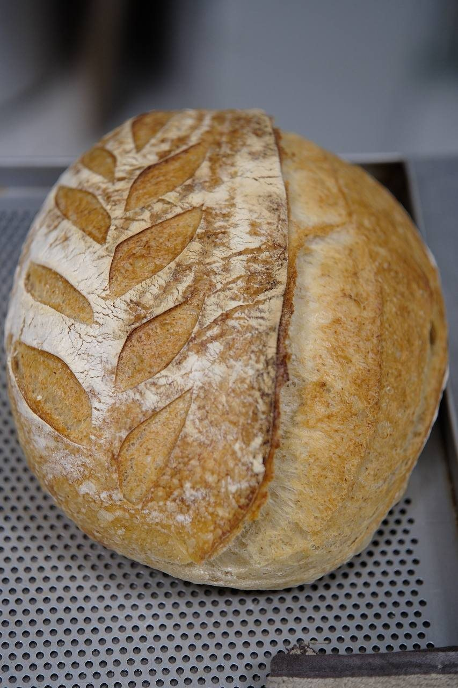
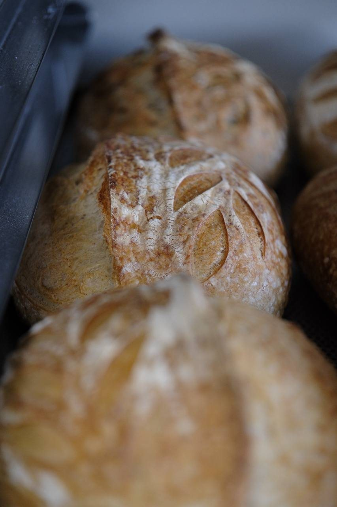
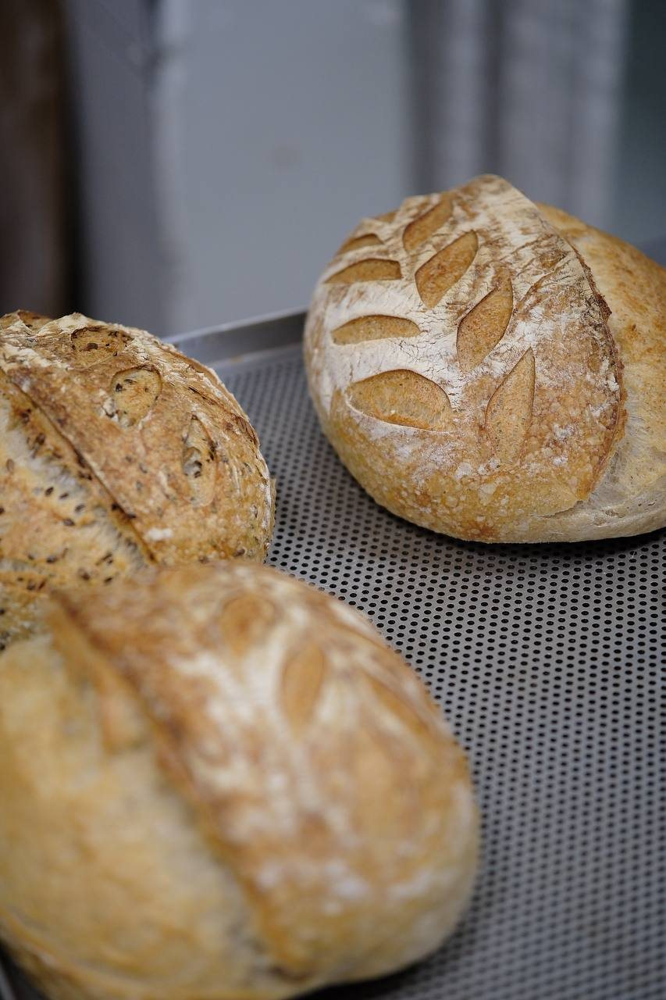

grain of tastecalculatorno magic, just scales
scale it
Type the flour you have, or the dough you want, and the number of loaves. Everything else follows baker's percentages — flour is always 100.
- 1Pick a recipe from the list.
- 2Pick how you start. "Flour I have" — type how much of each flour is in your cupboard. "Dough I want" — type how heavy one loaf should be, or tap 600 g / 1150 g.
- 3Weigh exactly the grams on the right. The proportions stay the same as in the recipe, so the bread turns out the same — just bigger or smaller.
Dough or bread? All weights in the calculator are dough. In the oven a loaf loses about 12–18% of its water: 600 g of dough → about 510 g of bread, 1150 g → about 980 g. Want 600 g of baked bread? Type about 700 g of dough.

01 · bread75% · 25% whole wheat · 2% salt



02 · stiff starter43% hydration
start from
This is the flour + water for one feeding. Add your ripe starter on top at the ratio from the starter page.
03 · liquid starter100% hydration
start from
Flour + water for one feeding. Ratio and schedule on the starter page.
how the math works
- aFlour is 100%. Water, salt and starter are percentages of flour, not of the dough.
- bThe starter brings flour and water with it. The calculator subtracts both, so the final hydration stays at 75% whichever starter you use.
- cPrefermented flour — the flour inside the starter — is 14.7% of all flour. That is why stiff and liquid give different starter grams for the same loaf.
- dDough weight = flour × (1 + hydration + salt). For this loaf: flour × 1.77.
×1.77flour → dough
So 339 g of flour makes a 600 g loaf, and 650 g makes 1150 g. Your bowl is the only limit.